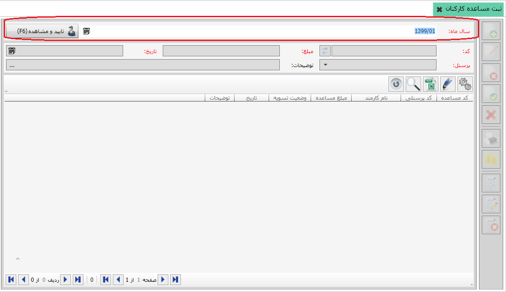

طبق آنچه برای تخصیص وام ها گفته شد، شما می توانید مساعده کارکنان را در سیستم حقوق و دستمزد ثبت کنید و سند پرداخت آن را نیز از سیستم حقوق و دستمزد صادر نمایید. برای دسترسی به این صفحه، از بخش «کاربردهای ویژه»، روی منوی «ثبت مساعده کارکنان» کلیک کنید تا صفحه مربوط به آن باز شود:

صفحه «ثبت مساعده کارکنان» در ابتدا به شکل بالا نمایش داده می شود. مشاهده می کنید که در این صفحه تنها فیلد سال ماه و کلید مقابل آن
 فعال است. با انتخاب سال ماه مورد نظر و زدن گزینه تایید و مشاهده می توانید مساعده های ثبت شده مربوط به همان سال ماه را در جدول پایین صفحه مشاهده نمایید.
فعال است. با انتخاب سال ماه مورد نظر و زدن گزینه تایید و مشاهده می توانید مساعده های ثبت شده مربوط به همان سال ماه را در جدول پایین صفحه مشاهده نمایید.
شکل بالا مساعده های ثبت شده برای به مرداد ماه 92 را نشان می دهد، در قسمت 1 مشاهده می کنید که پس از تایید سال ماه در مرحله قبل، گزینه «تایید و مشاهده» به گزینه
 تبدیل می شود و شما برای مشاهده مساعده های مربوط به سال ماه های دیگر باید از این قسمت اقدام به انتخاب نمایید.
تبدیل می شود و شما برای مشاهده مساعده های مربوط به سال ماه های دیگر باید از این قسمت اقدام به انتخاب نمایید.
در قسمت 3 کلیه مساعده های ثبت شده برای سال ماه انتخاب شده را نمایش می دهد، با انتخاب هر ردیف در جدول قسمت 3، جزئیات مربوط به آن ردیف در قسمت شماره 2 نمایش داده می شود.
برای ثبت مساعده جدید در سال ماه انتخاب شده، از نوار ابزار قسمت 4 که پس از تایید سال ماه فعال می شود اقدام نمایید.
 ایجاد مساعده جدید (F8):
برای ایجاد مساعده جدید از این گزینه استفاده می شود. با کلیک روی آن فیلدهای موجود در قسمت 2 در شکل قبل فعال می شود و شما می توانید اطلاعات مربوط به مساعده را وارد کنید.
ایجاد مساعده جدید (F8):
برای ایجاد مساعده جدید از این گزینه استفاده می شود. با کلیک روی آن فیلدهای موجود در قسمت 2 در شکل قبل فعال می شود و شما می توانید اطلاعات مربوط به مساعده را وارد کنید.
کد مساعده بر اساس کلیه مساعده های ثبت شده درج می شود، شما می توانید آن را تغییر دهید اما دقت داشته باشید که این کد نباید تکراری باشد. در فیلد مبلغ مساعده، مبلغ مساعده پرداختی را وارد کنید. در فیلد تاریخ به صورت خودکار اولین روز از سال ماه انتخاب شده درج می شود و شما می توانید روز آن را تغییر دهید. فیلد کد پرسنلی اسامی کارمندان تعریف شده را شامل می شود، نام کارمند مربوطه را در این قسمت انتخاب کنید و در پایان با درج توضیحات لازم، مساعده مورد نظر را ثبت نمایید.
 ثبت مساعده (Ctrl+Enter):
برای ثبت مساعده ایجاد شده در بخش قبل به کار می رود. با ثبت مساعده، سند پرداخت آن باز می شود. همانند آنچه برای پرداخت وام گفته شد، نام عملیات پرداخت مساعده، نام شخص انتخاب شده در هنگام ایجاد مساعده و تاریخ انتخاب شده در سند پرداخت مساعده درج شده است. با انتخاب محل عملیات و نحوه پرداخت مساعده در فیلد عامل می توانید سند پرداخت مساعده را ثبت نمایید. شکل زیر سند پرداخت مساعده را نمایش می دهد:
ثبت مساعده (Ctrl+Enter):
برای ثبت مساعده ایجاد شده در بخش قبل به کار می رود. با ثبت مساعده، سند پرداخت آن باز می شود. همانند آنچه برای پرداخت وام گفته شد، نام عملیات پرداخت مساعده، نام شخص انتخاب شده در هنگام ایجاد مساعده و تاریخ انتخاب شده در سند پرداخت مساعده درج شده است. با انتخاب محل عملیات و نحوه پرداخت مساعده در فیلد عامل می توانید سند پرداخت مساعده را ثبت نمایید. شکل زیر سند پرداخت مساعده را نمایش می دهد:

 ویرایش این مساعده (F2):
این گزینه پس از ثبت مساعده فعال می گردد و برای ویرایش مساعده ثبت شده به کار می رود.
ویرایش این مساعده (F2):
این گزینه پس از ثبت مساعده فعال می گردد و برای ویرایش مساعده ثبت شده به کار می رود.
 حذف این مساعده (F9):
گزینه حذف پس از ثبت مساعده فعال می شود که برای حذف مساعده ایجاد شده استفاده می شود.
حذف این مساعده (F9):
گزینه حذف پس از ثبت مساعده فعال می شود که برای حذف مساعده ایجاد شده استفاده می شود.
 انصراف (Ctrl+F2):
برای انصراف از ثبت یا انصراف از ویرایش استفاده می شود.
انصراف (Ctrl+F2):
برای انصراف از ثبت یا انصراف از ویرایش استفاده می شود.
 چاپ (Ctrl+P):
با انتخاب این گزینه می توانید مساعده (های) ثبت شده را چاپ نمایید.
چاپ (Ctrl+P):
با انتخاب این گزینه می توانید مساعده (های) ثبت شده را چاپ نمایید.
 سند تسویه:
در صورتی که قبلا برای مساعده ایجاد شده سند پرداخت صادر نکرده باشید، با انتخاب این گزینه، سند پرداخت مساعده باز می شود و می توانید آن را ثبت کنید. اما اگر قبلا سند پرداخت را ثبت کرده باشید با انتخاب این گزینه پیغام زیر نمایش داده می شود:
سند تسویه:
در صورتی که قبلا برای مساعده ایجاد شده سند پرداخت صادر نکرده باشید، با انتخاب این گزینه، سند پرداخت مساعده باز می شود و می توانید آن را ثبت کنید. اما اگر قبلا سند پرداخت را ثبت کرده باشید با انتخاب این گزینه پیغام زیر نمایش داده می شود:
با انتخاب گزینه بله پرداخت قبلی حذف و سند پرداخت جدید باز می شود. اما با انتخاب گزینه خیر عملیات پرداخت مجدد لغو می شود.
 نمایش سند پرداخت:
اگر برای مساعده ثبت شده سند پرداخت صادر کرده باشید با انتخاب این گزینه می توانید سند پرداخت مربوط به مساعده انتخاب شده را مشاهده نمایید.
نمایش سند پرداخت:
اگر برای مساعده ثبت شده سند پرداخت صادر کرده باشید با انتخاب این گزینه می توانید سند پرداخت مربوط به مساعده انتخاب شده را مشاهده نمایید.